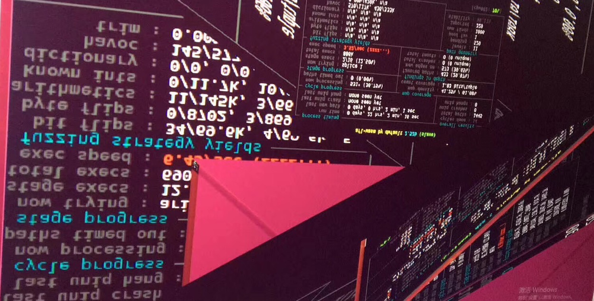
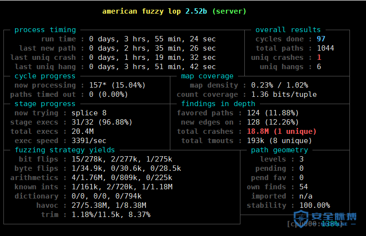
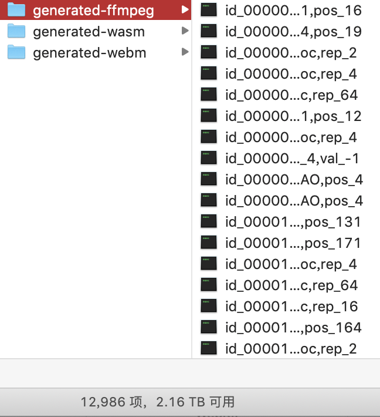

一、概述
关于afl-fuzz的原理和各种基本使用方法，已经有各位机智的网友写得比较完整了。本文的主要内容是，根据afl的一些特性，进行针对性的部署以提高fuzz的效率。虽然afl-fuzz是一个开箱即用的工具，但直接部署使用基本上是无法获得漏洞产出的。
二、读写文件操作
afl-fuzz在运行时的一个典型命令，形如：
1 | afl-fuzz -i in -o out -m none -t 2000 -- ffmpeg -i @@ |
给afl-fuzz指定参数时，@@在运行时实际被替换成out/.cur_input
也就是说每次执行的是：
1 | ffmpeg -i out/.cur_input |
可以看到这个文件在out目录下被不停地写入、删除，才支撑了afl-fuzz不停的变异尝试。在CPU、内存、硬盘中，硬盘运行速度是最慢的，因此在大多数情况下硬盘的读写速度才是afl-fuzz运行的瓶颈。
为了加快速度，可以把afl-fuzz的工作目录、可执行文件，放入/dev/shm，使用Linux的共享内存运行。这样类似RamDisk的操作把硬盘读写操作变成了内存读写操作。在一般的情况下，fuzz速度可以有二倍的提升。
但这个解决方案有一点局限性：
- 内存是易失性存储，如果运行fuzz的机器不幸重启，工作目录是无法保存的。这种情况下相当于之前跑的结果都丢失了。
- 在物理内存容量有限的时候，频繁的页面交换仍然会导致硬盘参与fuzz运行，拖慢运行速度。因此使用这种方案需要大内存支持。另外，在托管式fuzz平台上(例如ContinuesFuzzingPlatform)使用这种方案同样是不建议的。
三、图形化界面
关闭Linux的图形化操作界面虽然不能提升fuzz运行速度，但能够显著增强操作系统运行的稳定性(毕竟Linux的图形化界面)。

关闭图形化界面的方法，例如Ubuntu 14/16：
1 | sudo service lightdm stop |
在原始界面可以使用Control + Shift + F1、Control + Shift + F2、Control + Shift + F3等切换tty，获得不同的bash shell。在原始界面最多可以有6个tty供使用，因而在CPU数量足够的时候可以显式跑6个afl-fuzz的实例。
四、确定性变异与文件大小
afl-fuzz的变异策略包括确定性策略(deterministic)和随机性策略(random)，afl界面的左下角标明了不同策略下、不同阶段中的fuzz产出：

随机性策略仅包括havoc和splice，而确定性策略包括：
- bit flips
- byte flips
- arithmetic
- known ints
- dictionary
确定性策略的含义如下：对于一个文件，未来所有可能发生的变异都是已经确定了的，均为字长+步长的形式。例如flip是进行0、1的翻转操作，arithmetic是对字节进行数学运算操作，dictionary是对一些token字符串进行插入或覆盖操作。
既然是字长+步长的形式，文件的大小就极为重要。假如有一个1MB大小的样本文件，总共有1*10^6*8个bit，那么第一步bit flip 1/1，字长为1、步长为1，那么每次翻转一个bit，从前往后所有bit依次翻转，总共需要1*10^6*8次，即使目标程序每秒钟能够进行100次，仍然需要超过20个小时才能遍历完成这第一个文件的第一步变异，bitflip 2/1时则又需要10个小时…这样的fuzz相当于什么都没有fuzz，效率极低。这就是为什么afl的官方文档中要求每个文件最大不要超过10KB，而最好的情况下，样本文件大小应该小于1KB。样本文件大小非常非常重要，甚至可能是使用afl-fuzz不出结果的最重要原因之一。
另外，deterministic模式的变异在整个afl-fuzz的变异中占用了大多数的时间，而实践表明在无法找到更多样本的情况下，random策略可以更快地发现更多路径，并一定程度上弥补样本质量问题。
另外是右上角的cycles done表明了所有文件在deterministc策略下fuzz的完成数。由于deterministic策略下各文件的变异都是确定的，理论上不应该让cycles done这个值大于1。
五、样本复杂度与tmin
为了解决上述问题，同时保持样本的复杂度，afl-fuzz内置了一个叫做tmin的工具。使用afl-tmin的命令与afl-fuzz是相似的，但-i -o对应的参数是文件名，而不是文件夹名:
1 | $ afl-tmin -i 2 -o 2.min -- ~/parse |
tmin的原理也是基于字长+步长的形式，逐字节删除，然后通过插装反馈得出样本改变是否导致了程序运行路径发生了变化。若没有发生变化，可以认为删去的字节是冗余的，因此可以用来对单个样本精简。
由于tmin基于字长+步长的形式，它消耗的时间也是很多很多的，所以需要写一个脚本进行批量化。也有并行化tmin的第三方工具ptmin，它将afl-tmin并行化到一定数量的进程中，并证明在精简样本过程中显著地提升了速度：
1 |
|
六、样本多样性与cmin
为了增加覆盖率，样本需要有一定的多样性。人工增加样本多样性的方法中，最简单且明显的就是搜集下载样本，放进输入文件夹。这个过程是对样本进行丰富的过程，它非常重要，但这个过程也常常引入样本的冗余，降低fuzz的效率。为了解决这个问题，需要从大量的样本中筛掉无用的样本。
afl-cmin的命令与afl-fuzz、tmin也是相似的，但与tmin对比来看，tmin操作的是单个文件，输出单个文件；cmin操作的是文件集合，输出的也是文件集合。
曾经有过一些案例，辛苦找了200个文件、进行过tmin之后放入afl-fuzz的输入目录进行fuzz，对输入目录进行cmin后发现这些文件导致的程序执行路径是一样的。可以简单计算：如果不进行cmin，对这200个文件进行fuzz的结果相当于对1个文件进行fuzz200次，非常低效。
cmin也是成功使用afl-fuzz中必不可少的一步。
七、路径队列
在afl-fuzz的工作目录中有一个queue文件夹，这个文件夹内部的每个文件代表了afl-fuzz在模糊测试过程中获得的所有路径，每条路径不重复并且每条新路径都被修剪(trim)过。根据前两点针对样本复杂度和样本多样性的阐述，显然可以知道这些文件是用afl-fuzz运行时间换来的除crash之外的最重要产出。这些文件应该被收集起来，在fuzz同样的目标或者类似目标的时候可以并且应该被放入初始输入文件夹。
使用这样的方法，本质上是借助历史积累消除afl-fuzz中路径发现过程的不确定性，把握更多确定性的样本，从而提高覆盖率。
在smb://192.168.69.115/RESEARCH1-Internal中，我放入了很多fuzz过程中生成、收集的样本，数量超过20000，后续也会不断更新：

八、改造：并行模式
afl-fuzz的一个实例仅使用一个CPU。使用多个CPU的时候可以使用afl-fuzz的并行模式加快对样本的处理进度。但随着CPU数量线性增加，afl-fuzz的处理速度并不是线性增长的。
afl-fuzz内置的并行模式使用-M、-S来指定，主、从fuzzer使用简单的文件夹分离、读文件的方法来实现同步。例如：
1 | afl-fuzz -i in -o out -m none -t 2000 -M master -- ffmpeg -i @@ |
afl-fuzz的代码中规定master fuzzer使用deterministic fuzz，只能有一个实例；slave fuzzer使用random fuzz(dirty模式)，可以有多个实例。上述命令将会在out文件夹建立master、slave1、slave2、slave3三个文件夹，四个 fuzzer各使用一个CPU。在fuzz过程中，各 fuzzer在空闲时可以读取其他文件夹中的新文件，然后对自己的queue文件进行同步和更新。
个人认为这并不是一个很理想的解决方案，因为这样的条件下，运行前期master fuzzer的deterministic进程太慢，而slave随机产生新的样本后，master进程的deterministic变异进程总是来不及处理；而各slave进程重复概率大，需要的同步开销过大，导致afl-fuzz的处理速度并不是线性增长。
为了改善上述问题，afl官方文档提到代码实现了一种试验性功能的支持：
1 | there is anexperimental support for parallelizing the deterministic checks. To leveragethat, you need to create -M instances like so: |
这种试验性功能的思想是把deterministic fuzz分为不同的进程来进行。但是从实际代码来看，afl并没有实现这一功能，而仅仅解析了master_id。这里非常容易误导用户。
借鉴这个思想可以简单地实现这个功能。代码diff可以参考gitlab/wangxin/afl-wasm-d4/。更改的代码位于fuzz_one()函数，伪代码形如：
1 | if (master_id == 1){ |
通过master_id对deterministic的阶段进行划分，依据各阶段步长可以很容易计算出来划分依据。一个比较合理的划分可以让afl的进程分别执行以下过程：
1 | //master1 |
在这样的划分下，各master进程可以很快完成deterministic fuzz，配合少量的slave进程应该可以把fuzz效率在短时间内提升到较高。
另外，注意有一部分代码需要在if之外，所有的进程都需要处理这段代码：
1 | if (eff_cnt != EFF_ALEN(len) && |
九、改造：变异器加层
对afl-fuzz的变异器加层是一种扩展方法，并不是用于提升afl-fuzz常规运行效率。
afl-fuzz适合基于字节粒度变异的fuzz，但并不是所有目标都可以直接进行字节粒度的fuzz。有些是因为文件解析部分的代码不能单独抽出来，有些是因为文件解析仅仅是逻辑的开始。那么为变异器加层就是在这方面扩展afl-fuzz的最简单方法。
一个示例的代码可以参考gitlab/wangxin/afl-wasm/，这是一个可以为WebAssembly的wasm文件变异加层的fuzzer。这个工具产生的样本如下所示，其中变异的部分是wasmCode中的字节码，而外围的JavaScript代码需要手动编写，而且要求外围代码应该尽量复杂。
1 | var importObject = { |
为了实现这一加层，需要修改的地方是afl-fuzz.c的write_to_testcase()函数，大意是把变异的字节序列封装成字符串，并加上前后缀字符串写入文件：
1 | static void write_to_testcase(void* mem, u32 len) { |
借助这样的加层，afl-fuzz可以有效地对WebKit等浏览器的JavaScript引擎的WebAssembly模块进行fuzz。
结论：建议的工作流
综上所述，使用afl-fuzz的高效的工作流实践并不复杂，完全是针对afl内部运行原理的直观反应。由于各阶段的耗时特点，可以总结出来高效的工作流：
（1）单例：
搜集样本 –> cmin –> 部分tmin –> dirty模式单例fuzz –> cmin –> 单例fuzz –> 回收queue
queue –> cmin –> 部分tmin –> dirty模式单例fuzz –> cmin–> 单例fuzz –> 回收queue
（2）并行：
搜集样本 –> cmin –> 部分tmin –> 并行fuzz –> 回收queue
queue –> cmin –> 部分tmin –> 并行fuzz –> 回收queue
另：编译器插装问题汇总
- afl-2.52b之后，官方对其更新已经停止了。很多开源代码例如WebKit、Firefox使用了新的语法特性之后要求GCC-6以上才可以编译，而afl-2.52b与GCC-6无法兼容，会导致插装失败。这时候可以尝试llvm模式，使用afl-clang-fast。切换编译器之后编译命令可能略有不同，需要另查文档和试错。
- 使用afl-gcc、afl-clang等编译插装时，实装ASAN时命令有所改变，需要通过AFL_USE_ASAN=1环境变量传入，否则会发生一些冲突。
- 使用afl-gcc、afl-clang等编译插装时，实装ASAN时建议编译成32位，大多数时候64位下插装afl+ASAN插装组合都是不能使用的，因为占用内存过大。
另：其他改造
本文围绕afl-fuzz暴力效率流，主要讲的是如何利用现有的afl-fuzz挖出漏洞。此外afl-fuzz本身还有很多可以改进的点，可以称之为”精细流”。例如CollAFL提出两点改进：
- 增大路径bitmap的哈希表容量，减少碰撞；
- 根据路径覆盖优化选种策略。
相关内容可参考：
http://www.cnetsec.com/article/26263.html
http://chao.100871.net/papers/oakland18.pdf
此外，围绕afl-fuzz，还有很多衍生fuzzer和衍生工具，其中一部分被记录在了afl-fuzz官方文档的doc/sister_projects.txt下。比较有名的衍生fuzzer包括afl-go、WinAFL、afl-cov、kafl、android-afl等。